Turning your finished project into a portfolio-ready case study that shows how you think — not just what you made.
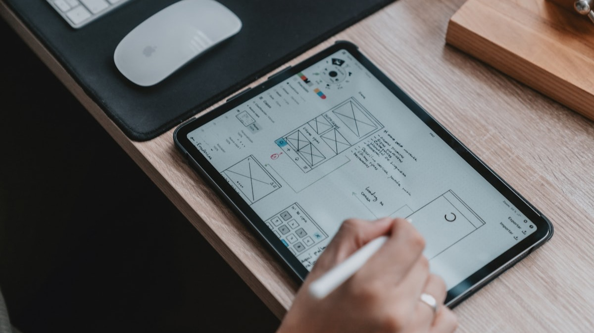
A case study exists to prove you understand how to do the work — not just that you can produce attractive final screens.
Since you don't yet have years of professional experience, you need to show and prove you can do the work — through your process, not just your images.
Good mockups without process documentation are decoration.
Process documentation without good mockups is still a case study.
The strongest case studies have both — but if you have to choose, process wins every time.
A case study walks someone through a project from start to finish — the problem, the research, the decisions, the process, and the result. It is the standard format for presenting design work in a portfolio.
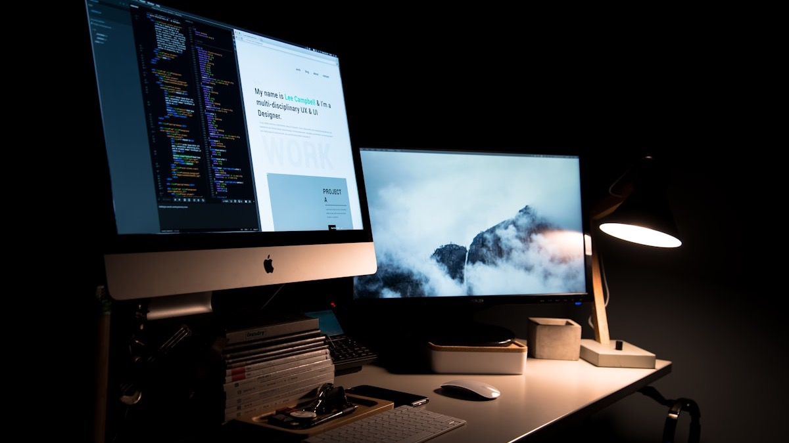
Most people won't read long-form content. That doesn't mean less content — it means more concise content.
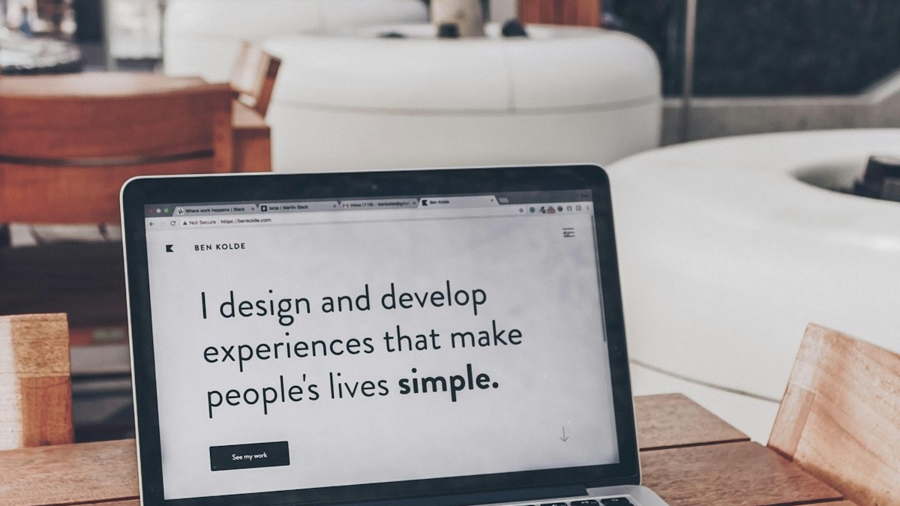
Most people won't read long-form content — but that doesn't mean less content. It means more concise content designed to be scanned.
If your visuals don't grab attention, the rest of your writing won't matter. Make every image intentional — mockups, wireframes, diagrams, before/afters.
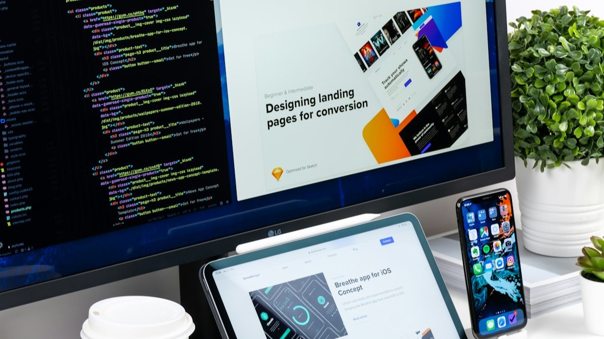
Explain the project like you're talking to a curious client across the table. No buzzwords. No "leveraging synergies." If you wouldn't say it out loud, don't write it.
Read your case study out loud. If it sounds like a textbook, rewrite it. If it sounds like you explaining your project to a friend who's genuinely interested — you're on the right track.
13 participants in focus groups. Every decision ties back to research. Admits she over-focused on visual polish early. The case study reads like a story.
Two distinct audiences researched separately. Competitive analysis across 6 platforms. Before/after navigation changes with reasoning for each.
Opens with "70% of users abandoned the website upon arrival." Reports 100% failure rate on certain tasks. Honestly notes user testing was still pending.
Lead with the problem. Ground decisions in research. Show the full process. End with honest reflection. By the time you see the final screens, you understand the thinking behind every decision.
Each section should lead into the next. Someone reading top to bottom should follow the thread from "here is the problem" all the way to "here is what I'd do next."
A user said they gave up after checking 3 apps. That insight appears in your persona. It shapes your sitemap. It drives your key feature. It shows up in your impact statement. One thread, start to finish.
If your final design can't be traced back to something in your research, the case study isn't doing its job.
You are not redesigning your project. You are not starting something new. You are packaging your finished work into a narrative that shows what you solved, how you approached it, and why your decisions made sense.
The raw material is done. Now you need to frame it as a story someone outside your class can follow.
Each phase should lead into the next — someone reading top to bottom should follow the thread from problem to result without gaps.
Hero section with project name, role, timeline. The problem statement. Your "How Might We" design challenge. Supporting images — research photos, competitive analysis, data.
"In today's world, technology is important." Get to the specific problem. Who has it, what does it cost them, and what are you trying to solve?
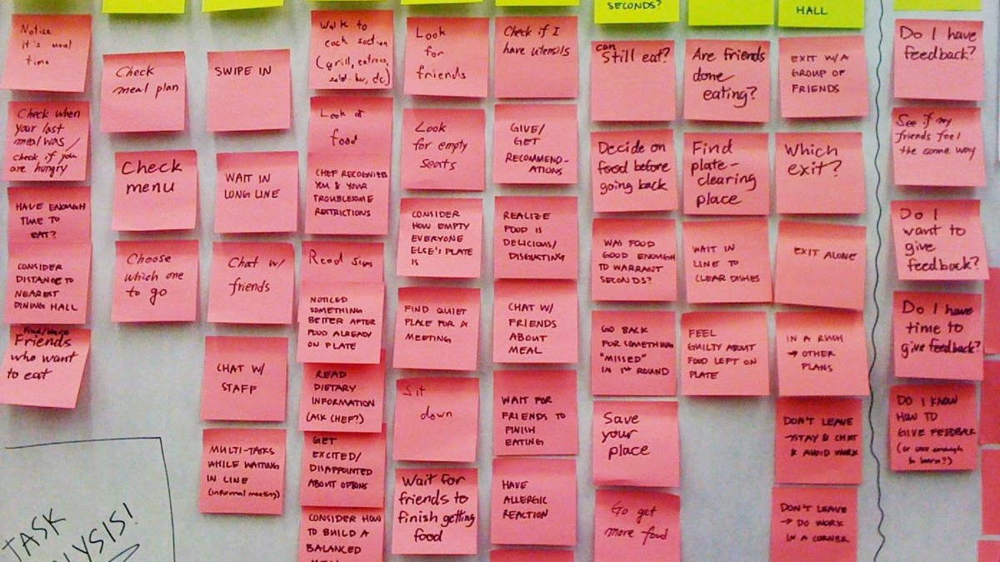
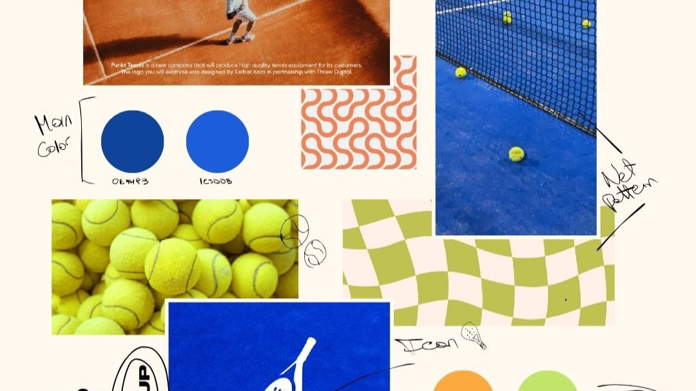
Lead with the specific problem and who has it. A number or a user quote in the first sentence immediately tells the reader why this matters.
Persona cards with goals and frustrations. Empathy map highlights — says, thinks, feels, does, pain points, gains. Journey map with scenario, stages, and opportunities.
Use your users' words. "I gave up after checking three different apps" does more work than you summarizing that users found it frustrating. Every decision later should trace back here.
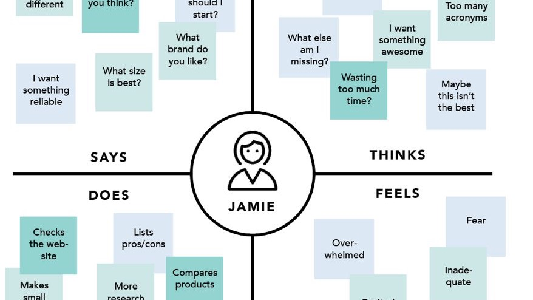
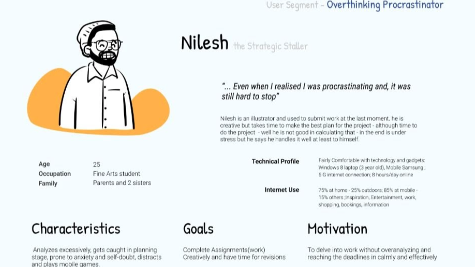
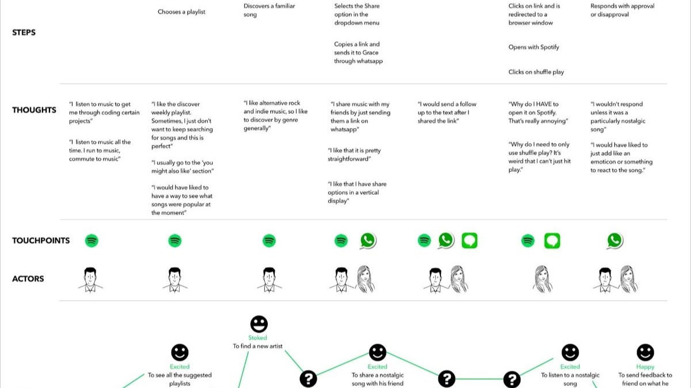
Sitemap explaining how the product is structured. Sketches and wireframes — rough concepts, layout experiments, early explorations. Show what changed and why.
This phase carries the most weight. Anyone can show a finished screen. Showing the wrong turns and iterations is what proves you went through a real design process.
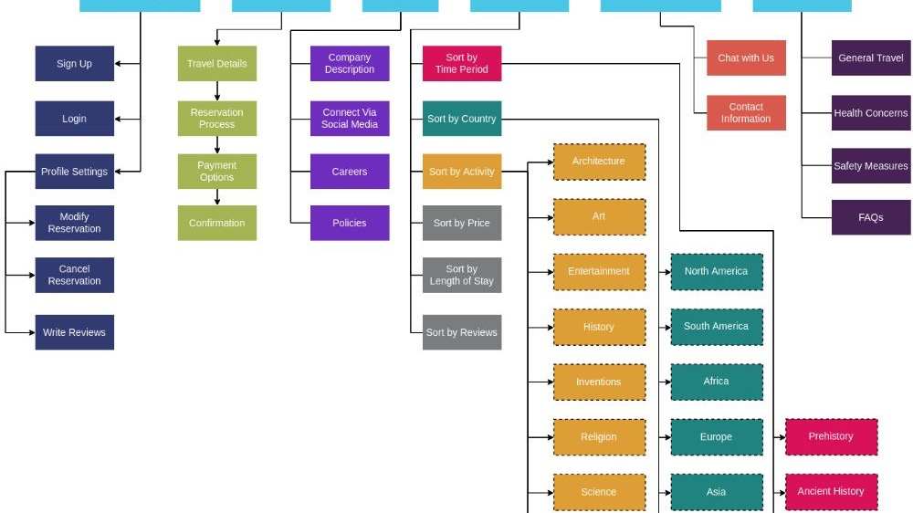
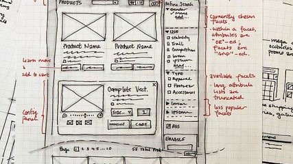
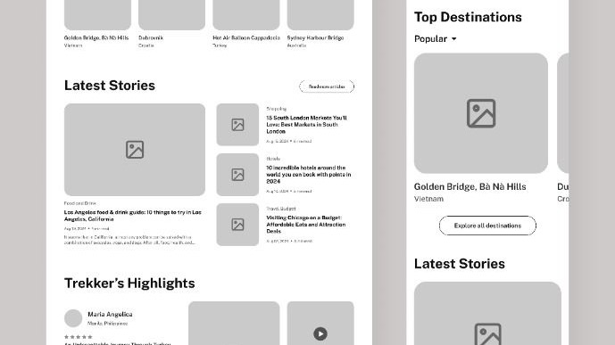
"Here are my wireframes." (Three polished frames with no explanation)
This just shows what you made. It doesn't show any thinking. There's no story of how you got here or what changed along the way.
"My first wireframe put the comparison tool on a separate page. After testing the flow, I realized users needed it on the same screen as search results — switching pages broke their train of thought."
Now I can see a decision, a reason, and an evolution. That's the proof of work.
If your early wireframes look different from your final design, that's a good thing — show the change and explain why it happened.
Prototype links for desktop, tablet, and mobile. Polished mockups across breakpoints. Pick screens that best demonstrate your decisions — you don't need every frame.
Walk through interactive features — filters, forms, comparison tools. What can users actually do? What makes this a tool and not just a static page?
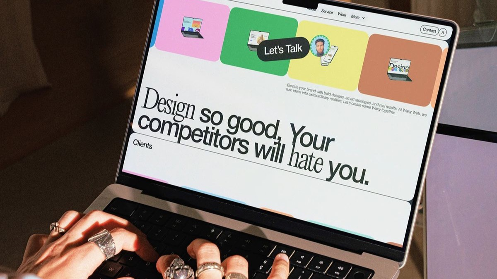
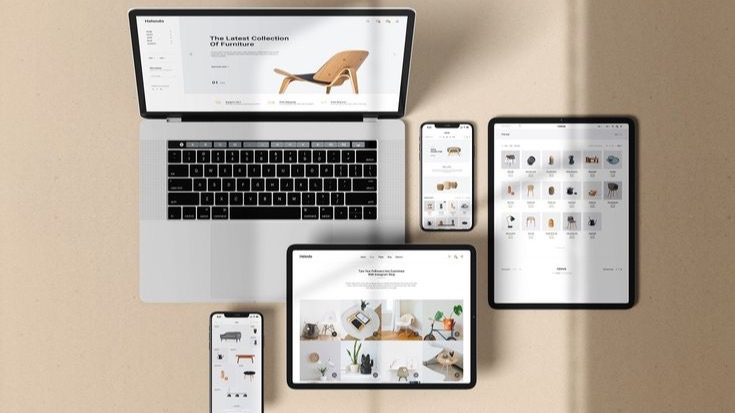
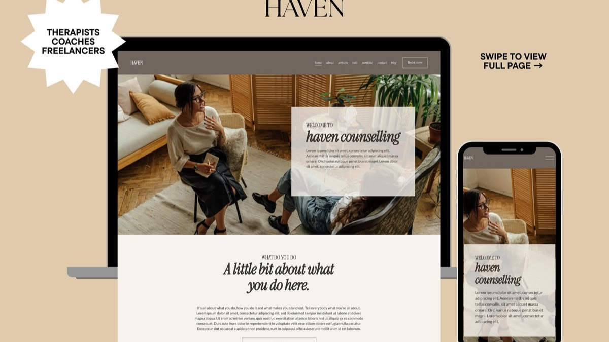
Before/after comparisons from group critique. State the feedback, show the change, explain why it improved. Projected impact tied to research findings.
What worked, what was hard, what you'd change. Don't say "I learned a lot." Say what you actually learned — a specific mistake, a process insight, a clear next step.
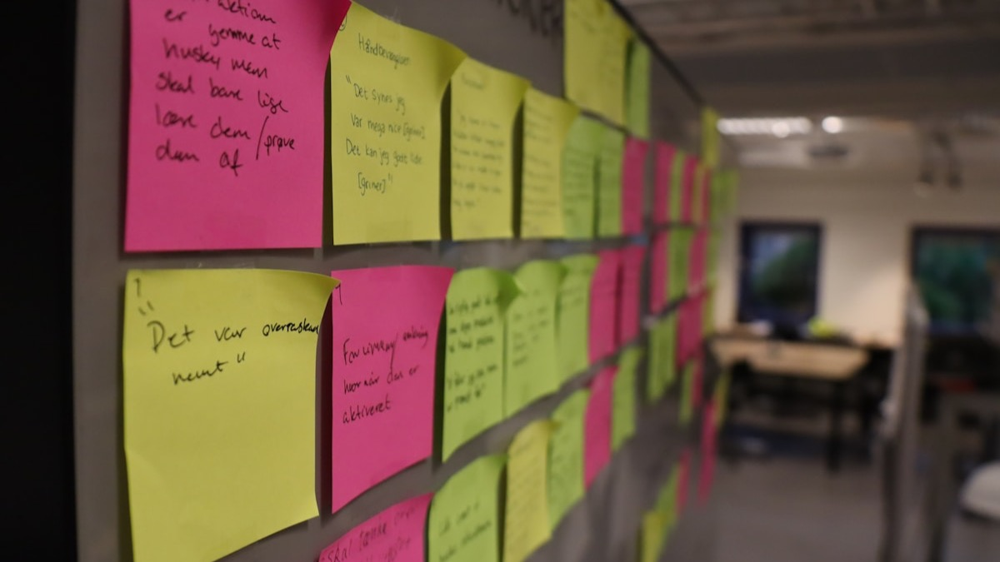
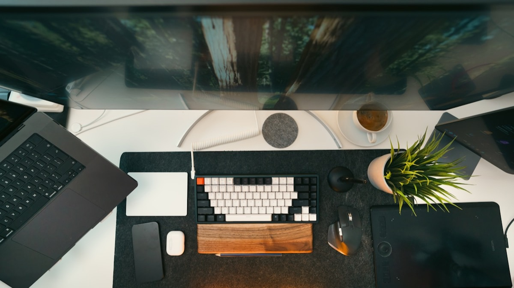
"Users weren't receiving alerts about new sales. Based on reviews, we hypothesized users didn't know they could adjust notification settings."
"I was the sole UX designer on an Agile team of 3 devs, a product owner, a scrum master, and a QA engineer."
"Usability testing showed users didn't realize they could adjust notification settings. We redesigned them to be more prominent in the navigation."
"Additional usability testing showed increased findability. Users could now adjust settings and access sales alerts."
"We prototyped a modal that displayed settings on login, but it frustrated users because they had to close it to complete their original task."
"Sales increased 15%. App reviews skewed positive and customer satisfaction scores increased."
"We realized the importance of prototype testing — test new designs before putting in development effort."
"The navigation felt buried — users in testing couldn't find the main action within the first 10 seconds."
Screenshot of the original design with a brief note about what wasn't working and why.
Screenshot of the revised design. Don't just show it — explain the specific change you made.
"Moving the primary CTA above the fold and increasing its contrast reduced the time to first action from 10+ seconds to under 3."
This is one of the most valuable sections in a case study. It shows you can receive feedback, evaluate it, and act on it. That's a skill employers care about deeply.
That kind of honesty is what makes someone hirable.
Good case studies show the work. Great case studies explain the thinking.
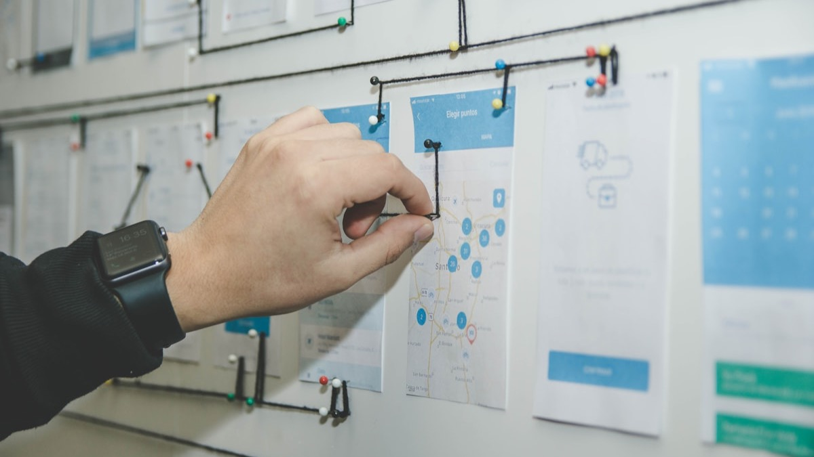